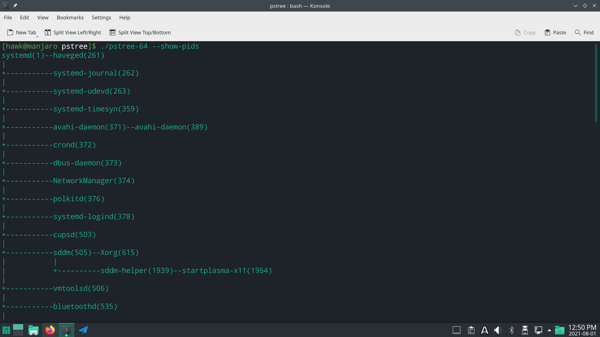

操作系统-设计与实现
前言
因为比较欠缺计算机基础知识，这里特别选取了南京大学蒋炎岩老师的《操作系统：设计与实现》，从而从理论和实践两方面，补全操作系统相关的知识
这些博客将简单记录重要的理论知识，以及全部的相关实验和实验心得，作为成长道路上的积累
M1打印进程树
实验背景
在Linux中，everything is a file。因此操作系统的状态也可以成为文件系统的一部分——在保持文件系统基本API没有变化的基础上，添加相关对象管理操作系统的状态信息。
实验描述
实验要求：实现pstree，打印进程之间的树状的父子关系
Linux系统中可以同时运行多个程序。运行的程序称为进程。除了所有进程的根外，每个进程都只有唯一的父进程，你的任务就是将这颗树在命令行中输出。你可以自由选择展示树的方式。
总览
1 | pstree [OPTION]... |
描述
把系统中的进程按照父亲-孩子的树状结构打印到终端
- -p —show-pids:打印每个进程的进程号
- -n —numeric-sort:按照pid的数值从小到大顺序输出一个进程的直接孩子
-V —version:打印版本信息
你可以在命令行中观察系统的
pstree的执行行为。这些参数可能任意组合
解释
上述实验要求是参照man page的格式写出的，其中有很多UNIX命令行工具遵守的共同约定，部分如下所示:
- 中括号括起来的参数是可选参数,[]后的…代表参数的0次或多次重复。因此-p、-n、-V都是可选的参数
- 同一个选项可以有不同的名字。在
pstree中，-p和--show-pids的含义相同 若不另行说明，整数范围在32位有符号整数范围内；但如果数值和文件大小有关，则其合法的范围是0到系统最大支持的文件大小
此外，
main函数的返回值代表了命令执行的状态，其中EXIT_SUCCESS表示命令执行成功，EXIT_FAILURE表示执行失败。对于POSIX来说，0表示成功，非0表示失败
实验指南
保持良好的模块化，既可以将复杂的问题分解为多个较为简单的问题并依次解决；亦方便进行调试和维护。整个实验实际上可以分为五部分：
- 获取命令行参数，根据要求设置标志变量的数值
- 获取系统中所有进程的编号(每个进程都会有唯一编号)并保存至列表中
- 对列表中的每个编号，获取其父进程
- 在内存中将树创建好，并按照命令行参数要求排序
- 输出树到终端上
设置实验环境
首先安装相关的依赖文件
1
sudo apt-get install qemu-system libsdl2-dev gcc-multilib
按照指导手册中说明的，我们从github上拉取相关的实验
1
git clone https://github.com/NJU-ProjectN/os-workbench.git nju
之后在该目录下拉取相关的实验代码即可
1
2cd nju
git pull origin M1
实验实现
下面是个人的思路及其实现, 实验实现
命令行参数
获取命令行参数的话，就是main中的两个参数int argc和char *argv[]，其中argc表示参数的个数， argv存储具体参数
我们在该部分一方面需要获取传递入的参数信息；另一方面，还需要对其进行简单的解析。这里简单说明一下思考情况及解析规则：
- 可能重复出现多个程序参数，如
pstree -p --show-pids - 可能出现多个不同的程序参数，如
pstree -p -n
根据观察系统pstree命令的表现，其应该具有如下规则：
- 当命令行参数中包含
-V或--version程序参数时，只输出对应的版本信息 依次解析后面的参数，并只需要标记一次即可
其代码实现如下所示
1
2
3
4
5
6
7
8
9
10
11
12
13
14
15
16
17
18
19
20
21
22
23
24
25
26
27
28
29/*
* 如果解析到相关的字段，则完成赋值即可
*/
static unsigned char show_pids = false, numeric_sort = false, show_version = false;
static void parse_arguements(int argc, char *argv[]) {
/*
* 第一个是程序名称，因此不需要进行解析
*/
for(int i = 1; i < argc; ++i) {
assert(argv[i]);
/*
* 可以使用hash表进行优化
*/
if(!strcmp(argv[i], "-p") || !strcmp(argv[i], "--show-pids")) {
show_pids = true;
}else if(!strcmp(argv[i], "-n") || !strcmp(argv[i], "--numeric-sort")) {
numeric_sort = true;
}else if(!strcmp(argv[i], "-V") || !strcmp(argv[i], "--version")) {
show_version = true;
break;
}else {
assert(false);
}
}
assert(!argv[argc]);
}
系统进程编号
作为一个基础的知识，操作系统中每一个进程，都会有唯一的编号与其对应，在C语言中是pid_t类型。
对于Linux操作系统来说，其提供了procfs(proc filesystem)机制来访问这些进程信息以及其他操作系统相关的信息，其目录为/proc。其目录下包括cpuinfo这样的文件，还有数字类型的文件夹，其记录了进程信息；而文件夹名称，也就是其进程号。
这里我们调用Linux下libc中的标准库，进行目录的读取和判断即可，可以通过命令man 3 opendir、man 3 readdir和man 3 closedir查看相关的API信息，其基本步骤如下所示：
- 调用
DIR *dir = opendir("/proc")，打开DIR*结构，为后面的遍历做准备 调用
struct dirent *dirItem = readdir(dir)，依次遍历/proc目录下的所有文件：- 如果dirItem == NULL，则表明遍历结束，此部分功能完成
- 否则，如果其文件名是数字，则为对应的进程子目录，将其目录名称进行统计即可
这里统计进程信息时，就按照简单的数组进行填充即可。这里数组按照动态数组进行管理，即每当数组大小不够时，调用
calloc扩充一倍大小即可其代码实现如下所示
1
2
3
4
5
6
7
8
9
10
11
12
13
14
15
16
17
18
19
20
21
22
23
24
25
26
27
28
29
30
31
32
33
34
35
36
37
38
39
40
41
42
43
44
45
46
47
48
49
50
51
52
53
54
55
56
57
58
59
60
61
62
63
64
65
66
67
68
69
70
71
72
73
/*
* 这里存放当前所有的pid
*/
static pid_t* pids = NULL;
static int pids_capacity = 0, pids_number = 0;
const static int pids_initial_capacity = 8;
const static char *procfs_dir = "/proc/";
/*
* 如果是数字类型的子目录，则其为pid，返回pid的值
* 如果不是，则返回-1
*/
static long dirent_to_pid(struct dirent *dirItem) {
assert(dirItem);
long pid = 0;
if(dirItem->d_type == DT_DIR) {
char *name = dirItem->d_name;
for(int i = 0; name[i]; ++i) {
if(name[i] > '9' || name[i] < '0') { return -1; }
pid = pid * 10 + name[i] - '0';
}
return pid;
}
return -1;
}
/*
* 动态插入pid
* 如果大小不够了，调用realloc扩充一倍容量后继续插入
*/
static void insert_pid(long pid) {
assert(pid > 0);
/* 进行pids的初始化 */
if(pids == NULL) {
pids_capacity = pids_initial_capacity;
pids_number = 0;
pids = (pid_t*)malloc(sizeof(pid_t) * pids_capacity);
}
/* 当pids容量不足时，进行扩充 */
if(pids_number == pids_capacity) {
pids_capacity *= 2;
pids = realloc(pids, sizeof(pid_t) * pids_capacity);
}
assert(pids);
pids[pids_number++] = (pid_t)pid;
}
static void get_pids(const char *dirName) {
DIR *dir = opendir(dirName);
assert(dir != NULL);
struct dirent *dirItem = NULL;
while((dirItem = readdir(dir)) != NULL) {
long pid = dirent_to_pid(dirItem);
if(pid > 0) { insert_pid(pid); }
}
}
系统进程关系
实际上，根据man 5 proc说明文档可以知道，在/proc/[pid]/stat文件中，描述了进程的相关信息，其第四个字符串表明了父进程的PID信息，因此我们只需要遍历一边前面得到的进程数组相关的stat文件，即可完成系统进程关系的获取。
由于这是一棵树，所以其很稀疏，因此我们就使用邻接数组的结构来存储这张树即可，其邻接数组中元素仍然是一个动态数组。另一方面，由于其在获取关系时需要读取stat文件，因此可以同时获取进程所执行的命令信息，避免之后二次打开文件读取，造成性能损失。
这个部分仅仅涉及简单的文件读取，其基本步骤如下所示：
- 从小到大遍历前面获取的系统中的进程数组，根据进程pid，打开/proc/[pid]/stat文件
- 读取该文件的第2个字段值，即comm字段，为被截断在16个字符以内的执行命令信息
读取该文件的第4个字段值，即ppid字段，为进程的父进程pid。
- 如果ppid为0，则该ppid不需要记录到关系中(因为默认根进程的pid为1)
- 如果ppid非0且已经在前面邻接数组中，则该进程为ppid的子进程，则向ppid的邻接数组中添加即可该子进程即可
这里看到频繁使用了动态数组这一结构，因此将其提取出来，使用void/*来实现泛型编程，从而避免多次实现，其代码如下所示
1
2
3
4
5
6
7
8
9
10
11
12
13
14
15
16
17
18
19
20
21
22
23
24
25
26
27
28
29
30
31
32
33
34
35
36/*
* 动态数组结构
* 当number == capacity时，将其大小扩充一倍
*/
typedef struct ARRAY {
void *arr;
long int size, capacity;
} Array;
static Array *__ARRAY_INIT(unsigned int type_size, unsigned int array_capacity) {
Array *array = (Array*)malloc(sizeof(Array));
assert(array);
array->arr = malloc(type_size * array_capacity);
assert(array->arr);
array->size = 0;
array->capacity = array_capacity;
return array;
}
static void __ARRAY_INSERT(Array *array, unsigned int type_size, void *element) {
assert(array);
if(array->size == array->capacity) {
array->capacity *= 2;
array->arr = realloc(array->arr, type_size * array->capacity);
}
assert(array->arr);
unsigned char *src = (unsigned char*)element, *dst = ((unsigned char*)array->arr) + type_size * (array->size++);
for(int i = 0; i < type_size; ++i) { dst[i] = src[i]; }
}通过上述机制，可以传递变量类型，从而完成泛型编程。最终该部分的具体代码如下所示
1
2
3
4
5
6
7
8
9
10
11
12
13
14
15
16
17
18
19
20
21
22
23
24
25
26
27
28
29
30
31
32
33
34
35
36
37
38
39
40
41
42
43
44
45
46
47
48
49
50
51
52
53
54
55
56
57
58
59
60
61
62
63
64
65
66
67
68
69
70
71
72
73
74
75
76
77
78
79
80
81
82
83
84
85
86
87
88
89
90
91
92
93
94
95
96
97
98
99
100
101
102
103
104
105
106
107
108
109
110
111/*
* 邻接数组的结构, 每一个节点表示一个待输出的进程
* pid表示当前节点所表示的进程的id信息
* comm表示当前节点所执行的命令名称
* adj是动态数组，存放所有子进程在邻接数组中的id信息, Array(int)类型
*/
typedef struct PNODE {
pid_t pid;
char *comm;
Array *son;
} Pnode;
/*
* 其为Pnode*的动态数组
*/
Array *pnodes = NULL;
/*
* pnode是按照pid字段升序排列的
* 使用二分查找，判断pid是否在pnode中
* 如果不存在，返回-1
* 如果存在，返回对应的下标
*/
static int Search_Pnode(pid_t pid) {
if(pnodes == NULL) { return -1; }
int left = 0, right = pnodes->size - 1;
while(left <= right) {
int middle = left + (right - left) / 2;
if(Array_Get(Pnode*, pnodes, middle)->pid == pid) { return middle; }
else if(Array_Get(Pnode*, pnodes, middle)->pid < pid) { left = middle + 1; }
else { right = middle - 1; }
}
return -1;
}
/*
* 读取/proc/[pid]/stat文件
* 其ppid应该为已经添加过得进程
* 根据上述文件内容生成PNODE,
*/
static void Get_Pnode(pid_t pid) {
char pstat[24] = {0}, comm[17] = {0};
pid_t ppid = 0;
sprintf(pstat, "/proc/%ld/stat", (long)pid);
FILE *fstat = fopen(pstat, "r");
if(!fstat) { return; }
//读取/proc/[pid]/stat四个字段，第一个，第三个字段仅仅是占位使用，没有实际意义
fscanf(fstat, "%d (%s %c %d", (int*)pstat, comm, pstat, &ppid);
if((ppid = Search_Pnode(ppid)) >= 0) {
Pnode *pnode = (Pnode*)malloc(sizeof(Pnode));
pnode->pid = pid;
pnode->son = NULL;
//由于其第二个字段形式为 (comm) ,因此最后一个括号需要被消除
int len = strlen(comm);
pnode->comm = (char*)malloc(len);
strcpy(pnode->comm, comm);
pnode->comm[len - 1] = 0;
if(!Array_Get(Pnode*, pnodes, ppid)->son) { Array_Get(Pnode*, pnodes, ppid)->son = Array_Init(int, 1); }
Array_Insert(int, Array_Get(Pnode*, pnodes, ppid)->son, &(pnodes->size));
Array_Insert(Pnode*, pnodes, &pnode);
}
fclose(fstat);
}
/*
* 初始化第一个进程信息
* 然后从小到大开始遍历即可
*/
static void Get_Pnodes() {
assert(pids && pids->arr);
/*
* 初始化第一个进程信息
*/
pnodes = Array_Init(Pnode*, 1);
char pstat[24] = {0}, comm[17] = {0};
sprintf(pstat, "/proc/%ld/stat", (long)(Array_Get(pid_t, pids, 0)));
FILE *fstat = fopen(pstat, "r");
if(!fstat) { return; }
//读取/proc/[pid]/stat两个字段，第一个仅仅是占位使用，没有实际意义
fscanf(fstat, "%d (%s", (int*)pstat, comm);
Pnode *pnode = (Pnode*)malloc(sizeof(Pnode));
pnode->pid = Array_Get(pid_t, pids, 0);
pnode->son = NULL;
//由于其第二个字段形式为 (comm) ,因此最后一个括号需要被消除
int len = strlen(comm);
pnode->comm = (char*)malloc(len);
strcpy(pnode->comm, comm);
pnode->comm[len - 1] = 0;
Array_Insert(Pnode*, pnodes, &pnode);
fclose(fstat);
/*
* 下面开始自小向大遍历整个进程数组
*/
for(int i = 1; i < pids->size; ++i) { Get_Pnode(Array_Get(pid_t, pids, i)); }
}
建树和打印
这也就是最后一部，即建树和打印。实际上这里为了方便起见，采用横向树，即子树先向右生成，多余的接着向下生长1
2
3
4
5p1--p2--p3
| |
| +---p4--p5
|
+---p6
这种形式的输出，可以使用DFS遍历，并且由于是一个树而非森林，则执行一遍DFS即可。当遍历到无可处理子进程的进程时，直接一行打印即可，接着回退进入下一行输出即可。
整个建树和打印的流程如下:
- 按照深度优先将处理当前进程入栈，并处理进程的下一个子进程，直到遇到没有子进程的进程为止。在这个过程中需要记录最左侧下标，以及已成功处理的子进程数量和是否已经打印，为之后打印做准备
- 按照前面的记录信息，如果打印第一行，直接跳转到步骤3。否则如果还未打印，则以空格填充；否则输出‘|’并填充”空格”对齐。
- 按照前面的记录信息，如果还未打印，则打印进程信息，并修改标记值。否则如果等于最左侧下标，输出‘+’并填充”-“对齐；否则输出’|’并填充空格对齐。这些通过”—“相连接。
将当前进程成功处理子进程的数量自增1，如果此时已成功处理的子进程个数 + 1 大于等于进程的子进程个数，继续执行步骤4，直到栈空；否则，跳转到步骤1开始执行
最后相关的代码如下:
1
2
3
4
5
6
7
8
9
10
11
12
13
14
15
16
17
18
19
20
21
22
23
24
25
26
27
28
29
30
31
32
33
34
35
36
37
38
39
40
41
42
43
44
45
46
47
48
49
50
51
52
53
54
55
56
57
58
59
60
61
62
63
64
65
66
67
68
69
70
71
72
73
74
75
76
77
78
79
80
81
82
83
84
85
86
87
88
89
90
91
92
93
94
95
96
97
98
99
100
101
102
103
104
105
106
107
108
109
110
111
112
113
114
115
116
117
118
119
120
121
122
123
124
125
126
127
128
129
130
131
132
133
134
135
136/*
* 建树所需要的结构
*/
typedef struct PSTACKNODE {
Pnode *pnode;
int processedSon;
unsigned char hasPrint;
} PStackNode;
Array *stack = NULL;
/*
* 根据stack的信息，打印一/两行输出
*/
static void Print_Line(int line, pid_t leftPid) {
assert(stack && stack->size);
/*
* 首先执行步骤二，输出|信息
*/
if(line) {
for(int i = 0; i < stack->size; ++i) {
unsigned char hasPrint = Array_Get(PStackNode*, stack, i)->hasPrint;
Pnode *pnode = Array_Get(PStackNode*, stack, i)->pnode;
if(hasPrint) {
//输出'|'，并用空格进行填充
putchar('|');
int len = strlen(pnode->comm);
for(int j = 1; j < len; ++j) { putchar(' '); }
}else {
int len = strlen(pnode->comm);
for(int j = 0; j < len; ++j) { putchar(' '); }
}
putchar(' ');
putchar(' ');
}
putchar('\n');
}
/*
* 接着执行步骤三，输出+/命令信息
*/
unsigned char needDotLine = 0;
for(int i = 0; i < stack->size; ++i) {
PStackNode* pstacknode = Array_Get(PStackNode*, stack, i);
Pnode *pnode = pstacknode->pnode;
if(needDotLine) {
putchar('-');
putchar('-');
}else if(i){
putchar(' ');
putchar(' ');
}
if(!pstacknode->hasPrint) {
printf("%s", pnode->comm);
pstacknode->hasPrint = 1;
if(!line) { needDotLine = 1; }
}
else if(leftPid == pnode->pid) {
int len = strlen(pnode->comm);
putchar('+');
for(int j = 1; j < len; ++j) { putchar('-'); }
needDotLine = 1;
}
else {
int len = strlen(pnode->comm);
putchar('|');
for(int j = 1; j < len; ++j) { putchar(' '); }
}
}
putchar('\n');
}
/*
* 即执行第四步，开始回退
*/
static void Go_Back() {
while(stack->size) {
PStackNode* p_stack_node = Array_Get(PStackNode*, stack, stack->size - 1);
if(!p_stack_node->pnode->son || (p_stack_node->processedSon + 1 >= p_stack_node->pnode->son->size)) {
Array_Fini(p_stack_node->pnode->son);
free(p_stack_node->pnode->comm);
free(p_stack_node->pnode);
free(p_stack_node);
--stack->size;
}else if(++p_stack_node->processedSon < p_stack_node->pnode->son->size) {
return;
}
}
}
/*
* 开始构建进程树并输出
*
* 即初始化栈
* 遍历栈即可
*/
static void Build_Print(void) {
assert(pnodes && pnodes->arr);
stack = Array_Init(PStackNode*, 1);
//初始化进程号为1的进程
PStackNode *initPStackNode = (PStackNode*)malloc(sizeof(PStackNode));
initPStackNode->pnode = Array_Get(Pnode*, pnodes, 0);
initPStackNode->processedSon = initPStackNode->hasPrint = 0;
Array_Insert(PStackNode*, stack, &initPStackNode);
for(int line = 0; stack->size; ++line) {
PStackNode *pstacknode = Array_Get(PStackNode*, stack, stack->size - 1);
pid_t leftPid = pstacknode->pnode->pid;
//开始遍历进程，直到没有子进程
do{
int sonIdx = Array_Get(int, pstacknode->pnode->son, pstacknode->processedSon);
pstacknode = (PStackNode*)malloc(sizeof(PStackNode));
pstacknode->pnode = Array_Get(Pnode*, pnodes, sonIdx);
pstacknode->processedSon = pstacknode->hasPrint = 0;
Array_Insert(PStackNode*, stack, &pstacknode);
}while(pstacknode->pnode->son && (pstacknode->processedSon < pstacknode->pnode->son->size));
Print_Line(line, leftPid);
Go_Back();
}
}
实验结果
这里需要注意一下，系统pstree程序不仅仅输出系统的进程信息，还包含这进程下的线程信息，这些本次实验并没有要求，因此并未输出。
其输出结果如下所示
